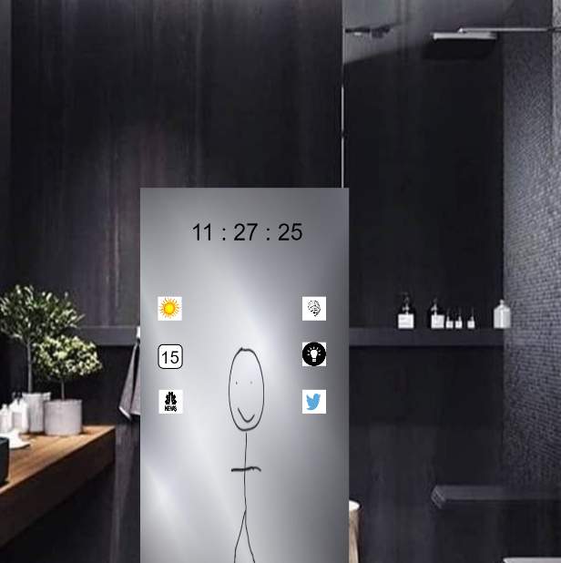

Human Computer Interaction
Project 2: Mirror Project
Kenneth Rodriguez

C
General Features
Include the general information in your sketch: personalized calendar, news feed, text messages, social feed items, clock, and weather.
There will also be a section
for your health, this will include how much sleep you got, a random exercise to do for the day, and also a scale. The sleep timer will
go off of your phone alarm and the time you fall asleep, it will subtract that from the alarm and tell you how many hours you have slept
throughout the night. The scale feature will work by having a scale below the mirror and it will store that information on the mirror, it will update
everytime you step on the scale and keep track of your weight for one week.
The General information can be found on the left side of the mirror, this includes a personalized calender,
news feed from a news network, and Local weather. Time will always be displayed unless the news app opens up because it will
take up most of the screen. The only difference from my sketch and the one implemented in p5 was that there was no messages
button and the layout was a little different but it has the same functionality.
When you click on the brain it will bring up three different options,
sleep, weight, and exercise. The user can click on those 3 and it will bring up the information
of the user for that option. The top one is the weight, hence the scale, when the user clicks on it, it will present the users weight
if they have a compatible scale in front of the mirror. If the user does not have a compatible one they could simply type
their weight themselves and keep track. The middle one with the weight will give you an exercise to do for the day, this can be randomized. This will also be able to keep track of the amount of
steps you have taken for the day. The last option is the one for sleep, the user will have to connect their phone to the mirror and set an alarm, the user could wear a device that detects when they fall asleep,
this will connect to the mirror, it can either be stopped by an alarm or when the device detects the user wake up. It will then keep track of their sleep,
light sleep or deep sleep, also how much you have slept everyday for the week.
The advanced feature in my smart mirror is the ability to also be a light source
The user can select the light button and it will cycle through colors, once the user wants that color they
can just leave it and it will function as a light, by clicking the light button again it will turn off the light feature.
YouTube Video
Below is my sketch that will represent a smart mirror. The time will always be on the mirror
unless you click on News, You will have options to check the weather in your area,
a personalized calendar filled with that days tasks, news feed to keep up with the news
while you get ready, and also your twitter feed that shows whats trending.
Health Features
Include the health-related information in your sketch: sleep, weight, exercises, and mirror time.


B
Below is the sketch in p5.js
Implement your Sketch in Processing or p5.js
The image is a little blurry due to me having to zoom in on my web browser, this does not
affect how it works though.

General Information
Implement the general information : personalized calendar (from a csv or json file), news feed (from a csv or json file), current clock, and local weather (from a file or api).
Health Information
Implement the health-related information in your sketch (select one of these): sleep, weight, exercises, and mirror time (from a csv or json file).
A
Implement one of the advanced features
2-Minute Presentation Video